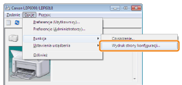
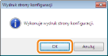

Wydruk strony konfiguracji zawiera ustawienia drukarki, całkowitą liczbę wydrukowanych stron oraz inne informacje na temat drukarki.
 |
Wydruk strony konfiguracji jest drukowany na papierze w formacie A4. Upewnij się, że format używanego papieru to A4.
|
1
Załaduj papier w formacie A4 do zasobnika uniwersalnego.
2
Kliknij [  ] w zasobniku zadań Windows, a następnie wybierz nazwę drukarki.
] w zasobniku zadań Windows, a następnie wybierz nazwę drukarki.
] w zasobniku zadań Windows, a następnie wybierz nazwę drukarki.
3
Z menu [Opcje], wybierz polecenie [Funkcja] → [Wydruk strony konfiguracji].

4
Kliknij przycisk [OK], aby wydrukować stronę konfiguracji.

 Jeśli wydruk strony konfiguracji nie jest drukowany Jeśli wydruk strony konfiguracji nie jest drukowany |
 "
"